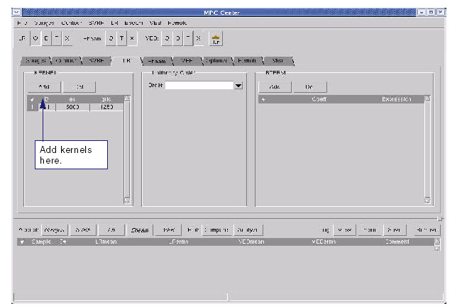

Add kernels,
uniformity order, and BTERMS for the Long Range model.
Procedure
- Click the LR tab (see Figure 1).
Figure 1. LR Tab (Add Kernels)
- In the LR page, make sure
that the Uniformity Order is set to 0. This will be reset at a later
stage.
- Add Kernels. Click the Add button to add Gaussian
kernels. You can start with 1 kernel and perform an initial run
to check if the model approximates your data. If you require more
coefficients for a better fit, you can return and add the second
kernel.